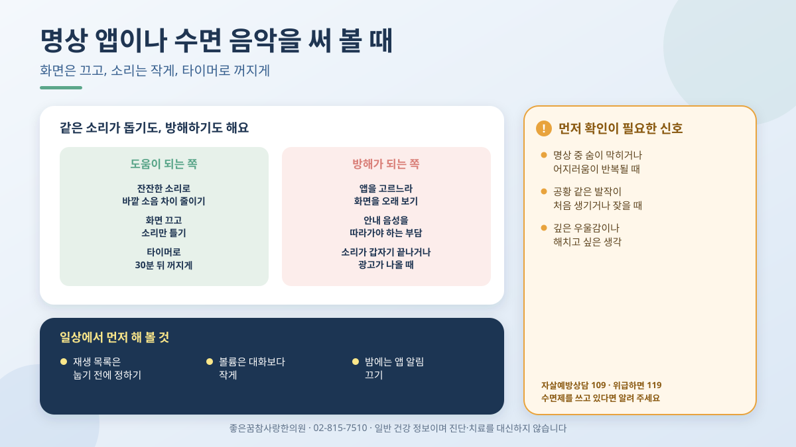

이종호 한의사 감수좋은꿈참사랑한의원 대표원장 (한의사 면허번호 19769)발행 2026-11-23 · 수정 2026-11-25
이 글의 차례
잠들 때 소리를 틀어 두면 편안하다는 분도 있고, 오히려 더 깨어 있다는 분도 있습니다. 같은 도구라도 쓰는 방법에 따라 잠을 돕기도 하고 방해하기도 합니다. 지금 쓰는 방식을 며칠만 점검해 보아도 화면, 볼륨, 시간 가운데 조절할 부분이 보입니다.
한 가지 방식을 1~2주 같은 조건으로 써 보며 잠드는 시간을 적어 두면, 나에게 맞는 방법인지 판단하기도 쉬워집니다.
같은 소리와 앱이 잠을 돕기도, 방해하기도 하는 이유
- 잔잔한 소리는 바깥 소음과의 차이를 줄여 작은 소리에 덜 깨게 할 수 있습니다.
- 앱을 고르고 조작하느라 화면을 오래 보면 밝은 빛이 졸음을 늦춥니다.
- 안내 음성을 따라가야 한다는 부담이 오히려 머리를 깨우는 분도 있습니다.
- 소리가 갑자기 끝나거나 중간에 광고가 나오면 그 순간 놀라 깨기 쉽습니다.
- 매일 같은 소리를 들으며 잠들면 그 소리가 잠들 시간이라는 신호가 되기도 하지만, 소리가 없는 곳에서는 오히려 잠들기 어렵다고 느끼는 분도 있습니다.
- 이어폰을 낀 채 자면 귀가 눌려 아프거나, 뒤척이다 빠지면서 깨기도 합니다.
먼저 이렇게 여쭙니다
- 지금 어떤 소리나 앱을 쓰고 있나요?
- 소리를 틀어 두면 잠드는 시간이 짧아지나요?
- 화면을 켜 둔 채로 잠드는 일이 있나요?
- 앱을 쓰기 시작한 뒤 잠이 어떻게 달라졌나요?
- 소리가 멈추면 오히려 깨는 편인가요?
일상에서 먼저 해 볼 수 있는 것
- 화면은 끄고 소리만 틀기
- 자기 전에 미리 재생 목록을 정해 두고 누운 뒤에는 폰을 만지지 않기
- 볼륨은 대화보다 작게 하고 타이머로 30분쯤 뒤에 꺼지게 하기
- 소리가 뚝 끊기지 않고 서서히 작아지며 꺼지는 설정이 있다면 켜 두기
- 중간에 광고가 끼어드는 재생 목록은 피하고, 미리 내려받아 두어 재생이 끊기지 않게 하기
- 앱의 알림 기능은 밤에 끄기
- 안내 음성이 부담스럽다면 명상 연습은 저녁 이른 시간에 하고, 잠자리에서는 가사 없는 잔잔한 소리로 바꾸기
- 잠들기 전 몇 분은 편안하게 들이쉬고 조금 길게 내쉬는 호흡을 해 보기(어지러우면 바로 멈추기)
- 소리에 의지하지 않아도 잘 수 있는 날을 조금씩 만들기
상황별 예시
- 예를 들어 퇴근 뒤 누워서 수면 음악을 고르다 30분씩 화면을 보게 되는 직장인이라면, 저녁에 미리 재생 목록 하나를 정해 두고 누운 뒤에는 화면을 켜지 않은 채 재생만 하도록 순서를 바꿔 봅니다. 타이머는 30분쯤으로 맞추고, 소리가 끝난 뒤에도 잠들지 못한 날이 며칠인지 다음 날 아침에 짧게 적어 둡니다.
- 예를 들어 시험을 앞둔 수험생이 공부할 때 쓰던 백색소음을 잠자리에서도 밤새 틀어 두는 경우, 공부할 때와 잘 때의 소리를 다르게 정해 두면 공부하던 긴장에서 벗어나기 쉽습니다. 잠자리 소리는 볼륨을 더 낮추고 타이머를 맞춰 밤새 소리 속에 있지 않게 합니다.
- 예를 들어 조용하면 귀가 허전하다며 라디오나 음악을 켜 두어야 잠드시는 어르신이라면, 소리를 끌 필요는 없지만 볼륨을 낮추고 꺼지는 시간을 맞춰 두는 편이 좋습니다. 조용해지면 귀에서 소리가 들려 더 괴롭다면 소리를 트는 것과 함께 귀 상태를 한 번 확인해 보시길 권합니다.
스스로 점검해 보세요
- 소리를 고르거나 조작하느라 누운 뒤에도 화면을 10분 넘게 본다.
- 소리 없이 누우면 잠들기까지 30분 넘게 걸리는 날이 대부분이다.
- 밤새 소리를 틀어 두고, 끄면 오히려 깬다.
- 이어폰을 낀 채 잠들어 아침에 귀가 아프거나 먹먹하다.
- 안내를 끝까지 따라 하지 못하면 오늘도 못 잘 것 같아 조바심이 난다.
- 앱 알림이나 중간 광고 소리에 깬 적이 있다.
- 소리를 써도 아침에 개운하지 않고 낮에 졸리다.
한의원에서 함께 살필 수 있는 경우
- 소리 없이는 잠들기 어려운 경우 긴장의 정도와 수면 시각을 함께 살핍니다.
- 명상이나 호흡 연습을 해도 몸이 쉬지 못하는 경우 몸의 긴장과 호흡 습관을 함께 살핍니다.
- 낮에 불안이 이어져 밤으로 번지는 경우 생활 전체의 리듬을 함께 살핍니다.
좋은꿈참사랑한의원에서는 첫 방문 때 지금 쓰는 소리나 앱, 쓰기 시작한 뒤 잠의 변화, 낮의 긴장을 먼저 듣고, 소리를 쓴 날과 안 쓴 날의 기록이 있으면 함께 봅니다. 그다음 맥부터 짚어 보고, 필요하다고 판단될 때 혀와 배를 살펴 몸 상태를 확인합니다. 가슴 두근거림이나 열감, 소화 불편, 손발의 냉기처럼 긴장이 드러나는 곳도 함께 여쭙습니다.
그 뒤 호흡과 생활 리듬 조정과 함께 침이나 한약 상담 등을 정합니다. 쓰던 앱은 그대로 두고 쓰는 방법만 바꾸는 것부터 함께 정리해 드립니다. 다음에 오시면 지난번 이야기를 이어서 여쭙고 기록을 함께 봅니다.
얼마나 지켜보고 언제 상담할까요
- 화면 끄기, 30분 타이머, 낮은 볼륨처럼 쓰는 방법을 바꾼 뒤 1~2주는 같은 조건으로 써 보며 잠드는 시간을 적어 봅니다.
- 방법을 바꿔도 3주 넘게 잠들기까지 30분 넘게 걸리는 날이 일주일에 세 번 이상이라면 상담을 받아 보세요.
- 소리 없이는 전혀 잠들 수 없어 출장이나 여행이 걱정될 정도라면 기간과 관계없이 이야기를 나눠 보세요.
- 명상이나 호흡 연습 중 숨이 막히거나 어지러우면 바로 멈추고, 같은 일이 반복되면 먼저 확인합니다.
이렇게 기록해 오시면 상담이 쉬워집니다
- 쓰는 앱이나 소리 종류와 트는 시간
- 이어폰과 스피커 가운데 무엇을 쓰는지, 볼륨과 타이머 설정
- 소리를 쓴 날과 안 쓴 날의 잠드는 시간
- 밤에 깬 시각과 그때 소리가 나고 있었는지
- 복용 중인 수면제나 다른 약
이런 증상은 먼저 확인이 필요합니다
- 명상 중 숨이 막히거나 어지러운 느낌이 반복되는 경우
- 공황 같은 발작이 처음 생기거나 자주 반복되는 경우
- 이어폰을 쓴 뒤 귀 통증이나 먹먹함, 귀울림이 이어지는 경우
- 두 주 넘게 거의 잠을 자지 못하는 경우
- 깊은 우울감이나 스스로를 해치고 싶다는 생각이 드는 경우에는 바로 ☎ 109에 연락하거나 가까운 응급실로 가세요.
가슴 통증이나 숨이 막히는 느낌이 갑자기 심하게 오면 가까운 응급실로 가세요. 갑자기 한쪽 귀가 잘 들리지 않으면 빨리 이비인후과를 찾으세요. 복용 중인 수면제나 신경안정제는 처방한 의사와 상의 없이 줄이거나 끊지 않습니다.
관련 글
- 오늘 밤은 잘 자려고 하지 않으셔도 됩니다 (자기 전에 읽는 글)
- 집중이 안 될 때 짧은 집중 구간과 백색소음은 어떻게 활용하나요?
- 스마트폰 알림 소리나 진동에 밤마다 깰 때는 어떻게 하나요?

여쭙는 것
- 지금 어떤 소리나 앱을 쓰고 있나요?
- 소리를 틀어 두면 잠드는 시간이 짧아지나요?
- 화면을 켜 둔 채로 잠드는 일이 있나요?
생활에서 해 볼 것
- 화면은 끄고 소리만 틀기
- 자기 전에 미리 재생 목록을 정해 두고 누운 뒤에는 폰을 만지지 않기
- 볼륨은 대화보다 작게 하고 타이머로 30분쯤 뒤에 꺼지게 하기
한의원에서 함께 살필 것
- 소리 없이는 잠들기 어려운 경우 긴장의 정도와 수면 시각을 함께 살핍니다.
- 명상이나 호흡 연습을 해도 몸이 쉬지 못하는 경우 몸의 긴장과 호흡 습관을 함께 살…
- 낮에 불안이 이어져 밤으로 번지는 경우 생활 전체의 리듬을 함께 살핍니다.
먼저 확인이 필요한 신호
- 명상 중 숨이 막히거나 어지러운 느낌이 반복되는 경우
- 공황 같은 발작이 처음 생기거나 자주 반복되는 경우
- 이어폰을 쓴 뒤 귀 통증이나 먹먹함, 귀울림이 이어지는 경우
한눈에 보는 표
| 구분 | 핵심 |
|---|---|
| 여쭙는 것 | 지금 어떤 소리나 앱을 쓰고 있나요? 소리를 틀어 두면 잠드는 시간이 짧아지나요? |
| 생활에서 해 볼 것 | 화면은 끄고 소리만 틀기 자기 전에 미리 재생 목록을 정해 두고 누운 뒤에는 폰을 만지지 않기 |
| 한의원에서 함께 살필 것 | 소리 없이는 잠들기 어려운 경우 긴장의 정도와 수면 시각을 함께 살핍니다. 명상이나 호흡 연습을 해도 몸이 쉬지 못하는 경우 몸의 긴장과 호흡 습관을 함께 살핍니다. |
| 먼저 확인이 필요한 신호 | 명상 중 숨이 막히거나 어지러운 느낌이 반복되는 경우 공황 같은 발작이 처음 생기거나 자주 반복되는 경우 |
자주 묻는 질문
수면 음악을 계속 들어도 되나요?
불편하지 않고 아침에 개운하다면 괜찮습니다. 소리 없이는 잠들 수 없다고 느껴진다면 상담해 보시길 권합니다.
명상 앱이 오히려 잠을 깨우는 느낌이 들어요.
집중해야 한다는 부담이 긴장이 될 수 있어 잠들기 전에는 안내 없는 잔잔한 소리가 맞을 수 있습니다.
수면용 이어폰을 끼고 자도 되나요?
오래 끼면 귀가 눌리거나 답답할 수 있어, 가능하면 작은 스피커로 낮은 볼륨을 쓰는 편이 부담이 적습니다.
자연의 소리와 음악 중 무엇이 나은가요?
정해진 답은 없습니다. 가사가 없고 박자 변화가 적은 소리가 잠들기 편하다는 분이 많으니, 며칠씩 바꿔 가며 잠드는 시간을 비교해 보세요.
좋은꿈참사랑한의원은 재진 때 지난번 이야기부터 이어서 여쭙니다. 진료시간과 예약은 오시는 길에서 확인하세요.
어디서 상담받을 수 있나요?
좋은꿈참사랑한의원은 서울 동작구 만양로2길 2 신성빌딩 3층·5층(서울 동작구 상도동, 7호선 상도역 3번 출구 근처)에 있습니다. 한의사 3명(이종호 대표원장, 조영기 수석진료원장, 정원영 진료원장)이 진료합니다. 진료시간은 평일 09:30~20:00(점심 13:00~14:00), 토·일·공휴일 09:30~15:00이며, 방문 전 전화로 확인을 권합니다. 예약은 네이버 예약, 카카오톡 상담, 전화 02-815-7510로 받습니다.
이 글은 일반적인 건강 정보이며 개인의 진단이나 치료를 대신하지 않습니다. 증상이 있거나 복용 중인 약이 있다면 진료를 통해 확인하세요. 치료 효과는 개인마다 다를 수 있습니다.
작성 기준: 일반적으로 알려져 있는 건강 정보를 참고해 정리했습니다(대표원장 감수). 증상 기록은 1~2주 동안 하루 1회, 비슷한 시간에 적어 오시면 지난 상태와 비교하기 쉽습니다.